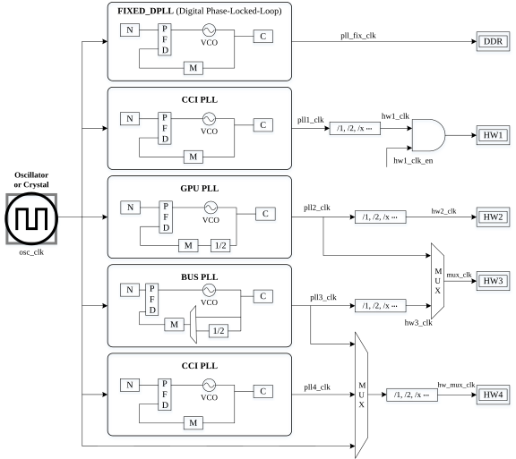

时间是构建事件时间轴的基石，用于识别正在发生的和已发生的事件。定时器是一种特殊的时钟，可用于测量事件的处理时间和控制一系列事件的发生。因此在Linux内核中，时间和定时器管理是至关重要的组成部分，可按功能将其分为如下几方面：
- 支持时间管理的计时「timekeeping」
- 时钟管理和同步
- 时间表达方式
- 定时器的事件中断处理
对于这些功能的实现都需要利用时钟装置，不过它们还与系统资源及其他硬件设备密切相关，并且还不能忽悠它们对体系架构的依赖，因此内核代码尽可能尝试对体系架构相关的部分进行抽象以利于时间管理和使用。在以前Linux内核中，已经使用基于HZ的低精度定时器实现了上述这些功能，然而由于物理限制产生的误差，所以要求高精度定时器控制的事件并不能保证在确切时间内处理。为了弥补缺陷和不足，内核在实现高精度定时器时引入了通用时间子系统「generic time subsystem」，同时还尝试修改多个API，使它们能够统一无差别地使用两种截然不同的定时器。本文将讨论通用时钟框架CCF「Common Clock Framework」、通用时间子系统以及定时器，它们都是时间和定时器管理的重要基础。
- Target Platform: Rock960c
- ARCH:arm64
- Linux Kernel:linux-4.19.27
通用时钟框架「common clock framework， CCF」
在以前的内核中，每种SoC都实现了一套操控时钟的API，而且每种SoC的时钟API都是单独自成体系的，从而导致相关代码大量冗余重复且分散，因此这对时钟管理带来极大不利。为了解决这种问题，在2012年5月发布的kernel 3.4版本内添加了一个新的时钟框架，并为该框架取名为CCF「Common Clock Framework」，其思想最初是由Jeremy Kerr（Canonical）提出的，代码实现却是由Mike Turquette（Texas Instruments）主导完成的。
时钟「clock」
时钟「时钟控制器」是SoC系统中集成的必要硬件，它能够驱动系统中各种设备正常工作，但为了能够使用时钟，就必须为SoC另外提供能驱使时钟运转的其他硬件。
SoC时钟
SoC内外的各个硬件通过连接在时钟树的不同分支上以获得不同的时钟输出信号，因此它们能够在不同频率下运行。SoC的时钟树是由多个时钟组件构成的，并且父时钟组件的输出信号可用作子时钟组件的输入信号。大多数时钟组件都是可以软件编程配置的，并且能够在运行时改变以进行电源管理。由于时钟的父子层级结构，时钟的操作需遵守如下约束：
- 当激活下面子时钟时，必须先激活上面父时钟
- 如果所有后代都被禁用了，则应该禁用父时钟
- 必须知道什么时候能够启用/禁用时钟
必要的时钟组件
组成时钟树的基础组件是fixed时钟、gate时钟、mux时钟、rate可变时钟等，通常SoC所用的时钟树如图1所示。由于使用的设备千差万别，所以供给设备的时钟频率也要适当改变。尽管PLL「锁相环」能够产生固定或可变频率的时钟信号，但是为了使设备更灵活地使用时钟输出信号，还要使用mux时钟和gate时钟等基础组件完成时钟信号的后处理「post」和选择。内核对这些时钟组件进行抽象得出一组标准数据结构，其名称取决于自身的使用方式和特点，如表1所示。

图1 SoC常用的clock结构
数据结构和API
为了实现CLK框架结构，内核定义声明了用于描述时钟的多种数据结构以及注册和使用它们的API。如图3所示，以树的形式展示了定义的多个时钟数据结构。
图3 描述时钟的数据结构
相关的初始化函数
of_clk_init()：初始化CCF
dirvers/clk/clk.c的of_clk_init()1
2
3
4
5
6
7
8
9
10
11
12
13
14
15
16
17
18
19
20
21
22
23
24
25
26
27
28
29
30
31
32
33
34
35
36
37
38
39
40
41
42
43
44
45
46
47
48
49
50
51
52
53
54
55
56
57
58
59
60
61
62
63
64
65
66void __init of_clk_init(const struct of_device_id *matches)
{
const struct of_device_id *match;
struct device_node *np;
struct clock_provider *clk_provider, *next;
bool is_init_done;
bool force = false;
LIST_HEAD(clk_provider_list);
if (!matches)
matches = &__clk_of_table;
/* First prepare the list of the clocks providers */
for_each_matching_node_and_match(np, matches, &match) {
struct clock_provider *parent;
if (!of_device_is_available(np))
continue;
parent = kzalloc(sizeof(*parent), GFP_KERNEL);
if (!parent) {
list_for_each_entry_safe(clk_provider, next,
&clk_provider_list, node) {
list_del(&clk_provider->node);
of_node_put(clk_provider->np);
kfree(clk_provider);
}
of_node_put(np);
return;
}
parent->clk_init_cb = match->data;
parent->np = of_node_get(np);
list_add_tail(&parent->node, &clk_provider_list);
}
while (!list_empty(&clk_provider_list)) {
is_init_done = false;
list_for_each_entry_safe(clk_provider, next,
&clk_provider_list, node) {
if (force || parent_ready(clk_provider->np)) {
/* Don't populate platform devices */
of_node_set_flag(clk_provider->np,
OF_POPULATED);
clk_provider->clk_init_cb(clk_provider->np);
of_clk_set_defaults(clk_provider->np, true);
list_del(&clk_provider->node);
of_node_put(clk_provider->np);
kfree(clk_provider);
is_init_done = true;
}
}
/*
* We didn't manage to initialize any of the
* remaining providers during the last loop, so now we
* initialize all the remaining ones unconditionally
* in case the clock parent was not mandatory
*/
if (!is_init_done)
force = true;
}
}
时间子系统「time subsystem」
基础配置概述
时钟源「clock source」
时钟事件「clock event」
滴答设备「tick device」
使用时钟源「clock source」初始化timekeeper
timekeeping_init()：设置xtime1
2
3
4
5
6
7
8
9
10
11
12
13
14
15
16
17
18
19
20
21
22
23
24
25
26
27
28
29
30
31
32
33
34
35
36
37
38
39
40
41
42
43
44void __init timekeeping_init(void)
{
struct timespec64 wall_time, boot_offset, wall_to_mono;
struct timekeeper *tk = &tk_core.timekeeper;
struct clocksource *clock;
unsigned long flags;
read_persistent_wall_and_boot_offset(&wall_time, &boot_offset);
if (timespec64_valid_strict(&wall_time) &&
timespec64_to_ns(&wall_time) > 0) {
persistent_clock_exists = true;
} else if (timespec64_to_ns(&wall_time) != 0) {
pr_warn("Persistent clock returned invalid value");
wall_time = (struct timespec64){0};
}
if (timespec64_compare(&wall_time, &boot_offset) < 0)
boot_offset = (struct timespec64){0};
/*
* We want set wall_to_mono, so the following is true:
* wall time + wall_to_mono = boot time
*/
wall_to_mono = timespec64_sub(boot_offset, wall_time);
raw_spin_lock_irqsave(&timekeeper_lock, flags);
write_seqcount_begin(&tk_core.seq);
ntp_init();
clock = clocksource_default_clock();
if (clock->enable)
clock->enable(clock);
tk_setup_internals(tk, clock);
tk_set_xtime(tk, &wall_time);
tk->raw_sec = 0;
tk_set_wall_to_mono(tk, wall_to_mono);
timekeeping_update(tk, TK_MIRROR | TK_CLOCK_WAS_SET);
write_seqcount_end(&tk_core.seq);
raw_spin_unlock_irqrestore(&timekeeper_lock, flags);
}
time_init()
arch/arm64/kernel/time.c的time_init()1
2
3
4
5
6
7
8
9
10
11
12
13
14
15
16void __init time_init(void)
{
u32 arch_timer_rate;
of_clk_init(NULL);
timer_probe();
tick_setup_hrtimer_broadcast();
arch_timer_rate = arch_timer_get_rate();
if (!arch_timer_rate)
panic("Unable to initialise architected timer.\n");
/* Calibrate the delay loop directly */
lpj_fine = arch_timer_rate / HZ;
}